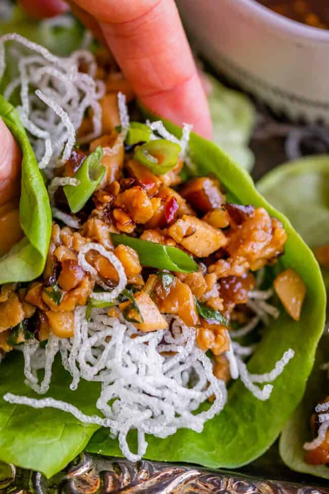

Chicken Lettuce Wraps

Juicy chicken, shiitake mushrooms, and water chestnuts nestled in a lettuce leaf.
Ingredients
Chicken filling
- 2.5 Tbsp canola oil
- 2.5 Tbsp sesame oil
- 1 lb chicken thigh
- 2 ounces dried shiitake mushrooms
- 1 8-oz can water chestnuts
- 1 Tbsp garlic, minced
- 1 Tbsp ginger, minced
- 4 green onions, chopped
- 2 heads butter lettuce (or iceberg)
Sauce for chicken filling
- 1/4 cup cold water
- 2 Tbsp soy sauce
- 2 Tbsp oyster sauce
- 2 Tbsp aji mirin (rice wine)
- 3 Tbsp hoisin sauce
- 1 Tbsp sugar
- 1 tsp cornstarch
Dipping sauce
- 1/4 cup warm water
- 2 Tbsp sugar
- 3 Tbsp soy sauce
- 4 tsp rice vinegar
- 1 tsp chili garlic sauce
- 1/4 tsp Chinese-Style Hot Mustard
- 1 tsp oyster sauce
- 1/2 tsp sesame oil
Steps
- Rehydrate the shiitake mushrooms. Add 2 ounces dried shiitake mushrooms to a medium bowl and cover with very hot water.
Let sit for 30 minutes. Once softened, squeeze excess water and chop off stems.
Chop into small pieces. Should have ~1.75 cups diced mushrooms.
- Prepare the vegetables. Chop water chestnuts into fine pieces, mince garlic and ginger.
- Assemble the filling sauce. In a small bowl, stir together ingredients and set aside.
- Chop the chicken into small pieces, about 1/4 inch cubes.
- Add 1.5 Tbsp neutral oil and 0.5 Tbsp sesame oil to wok or cast iron skillet over medium high heat.
- Add the diced chicken, stirring constantly until cooked, about
2-3 minutes. Add salt and pepper to taste. Remove.
- Add another 1 Tbsp neutral oil and 1 tsp sesame oil. Add mushrooms and water chestnuts.
Saute for 2-3 minutes. Add garlic and ginger and saute for 1 minute.
- Return chicken and add the filling sauce. Lower heat to medium and cook another 1-2 minutes. Remove from heat.
- Make the dipping sauce by whisking together ingredients in small bowl.
- Wash each butter lettuce leaf and lay on paper towels to dry.
- Add chicken filling to lettuce wraps and garnish with chopped green onion. Optionally serve with rice.